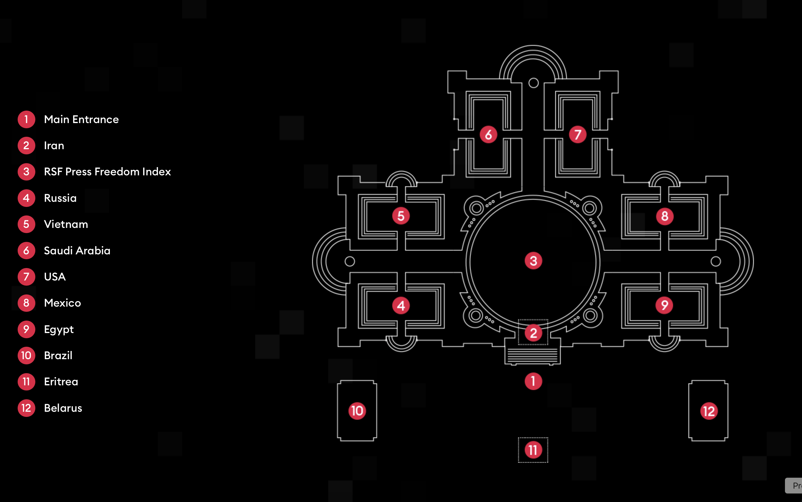
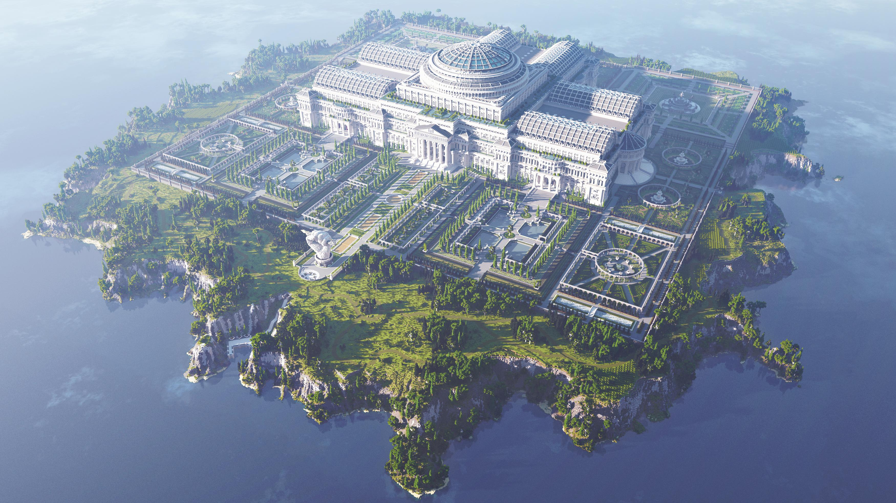
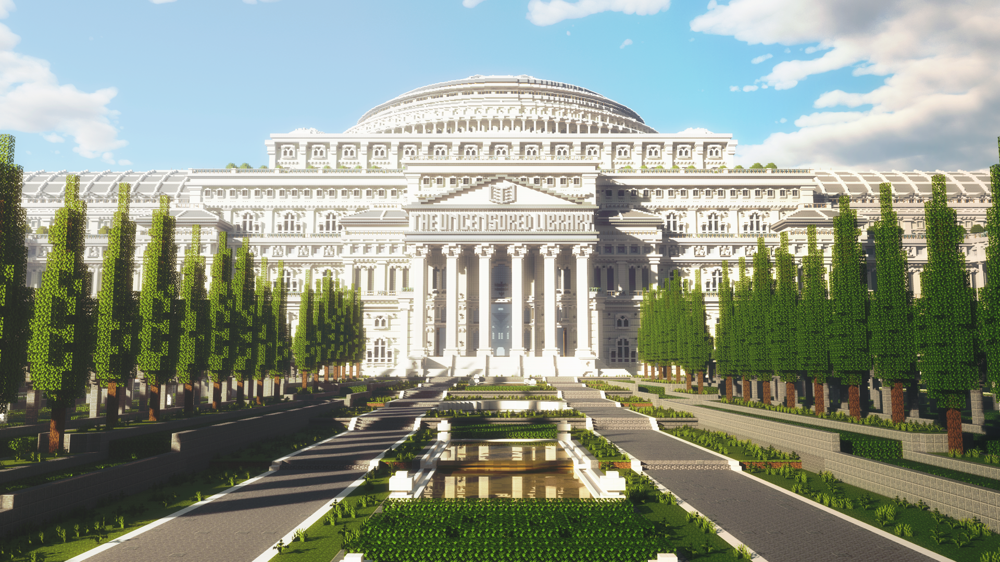
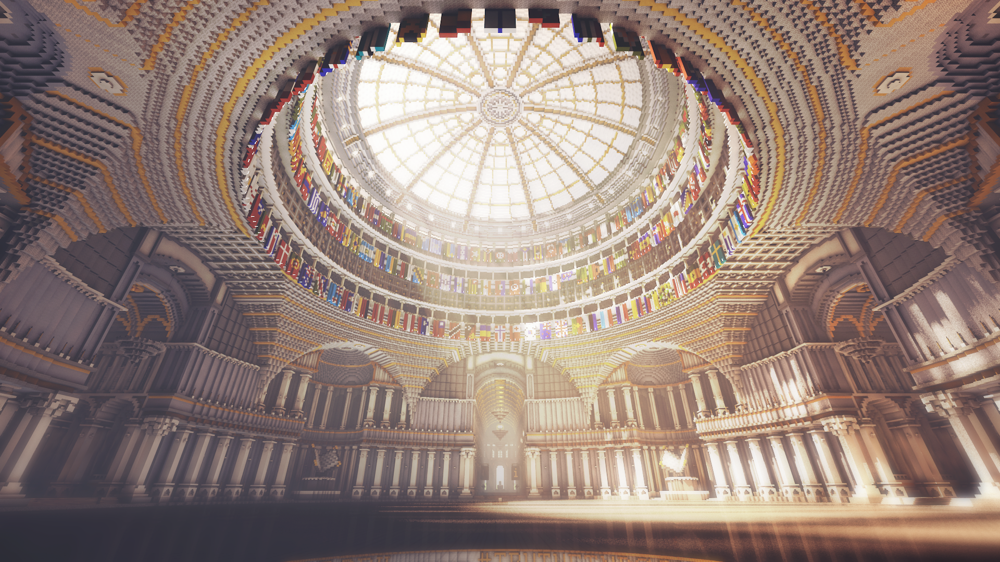

The Film
Explore the film that documents the creation of The Uncensored Library.
click here to watch the film.
Introduction
Learn about the background and purpose of The Uncensored Library project.
The Uncensored Library is a virtual library built within Minecraft by Reporters Without Borders (RSF) in collaboration with BlockWorks, DDB Berlin, and MediaMonks. Launched on the World Day Against Cyber Censorship in 2020, the project functions as a digital archive that preserves censored journalism by embedding banned articles into readable in-game books. Organized as a monumental neoclassical library with country-specific exhibition halls, it allows visitors to freely explore reports that have been suppressed by governments while learning about the global state of press freedom. By transforming a popular gaming platform into an accessible archive, the project demonstrates how virtual environments can operate as alternative spaces for knowledge preservation, public education, and resistance to information censorship.
Here are press releases and additional resources:
2020 2026Making Of
Discover the process and techniques used to create The Uncensored Library.
The project was motivated by the growing suppression of independent journalism and the recognition that conventional websites and social media platforms are often blocked or heavily monitored in countries with limited press freedom. Rather than creating another online archive vulnerable to the same restrictions, the designers identified Minecraft as an unexpected yet effective medium because the game remained accessible in many of these regions. Their goal was not only to restore public access to censored information but also to engage younger audiences who regularly inhabit digital game worlds. In doing so, The Uncensored Library reframes virtual space as a form of civic infrastructure, demonstrating that entertainment platforms can also function as sites for political expression, public memory, and the defense of freedom of information.
Minecraft was chosen because of its global popularity, accessibility, and flexibility as a user-generated platform. At the time of the project's launch, the game was available in many countries where independent news websites were blocked, making it an effective alternative channel for distributing censored information. Built as a multiplayer server using Minecraft: Java Edition, The Uncensored Library leverages the game's ability to store text in interactive in-game books, allowing visitors to read complete articles while exploring the virtual environment. The project also takes advantage of Minecraft's block-based building system to create a monumental digital library that functions simultaneously as an archive, exhibition space, and educational environment. By repurposing a commercial game engine as an information infrastructure, the project demonstrates how existing digital platforms can be adapted to preserve and circulate knowledge beyond conventional web-based media.
Visit the Uncensored Library Minecraft page for more information.
Read the How to Access the Uncensored Library documentation if you are interested in it.
Members
Meet the team behind The Uncensored Library project.
The Uncensored Library was created by a collaborative team of journalists, architects, designers, and developers. The project was initiated by Reporters Without Borders (RSF), an international non-profit organization that advocates for press freedom and the protection of journalists worldwide. The architectural design and construction of the virtual library were led by BlockWorks, a Minecraft building studio known for its large-scale digital creations. DDB Berlin contributed to the project's creative direction and communication strategy, while MediaMonks provided technical support and development expertise. Together, these organizations worked to create a unique digital space that combines architecture, journalism, and interactive storytelling to promote access to censored information.
Key team members include:
- Reporters Without Borders (RSF) - Project Initiator
- BlockWorks - Architectural Design and Construction
- DDB Berlin - Creative Direction and Communication
- MediaMonks - Technical Support and Development
- Journalists and Contributors - Various international journalists whose censored articles are featured in the library
For a complete list of journalists, please refer to the credits available on the project's website.
Floorplan
Explore the layout and design of The Uncensored Library.

The Uncensored Library is organized as a monumental neoclassical structure with country-specific exhibition halls. Each hall is designed to reflect the architectural and cultural context of the respective country, providing visitors with an immersive experience that connects the content of the censored articles to their geopolitical origins. The library's layout includes a central atrium, reading rooms, memorial spaces for persecuted journalists, and interactive exhibits that contextualize the state of press freedom in different regions. The design emphasizes accessibility and navigation, allowing visitors to easily explore the various sections while engaging with the content in a meaningful way.
References
Access the collection of articles written about the Uncensored Library.
- 1. Nelius, Joanna (12 March 2020). "This Minecraft Library Provides a Platform for Censored Journalists". Games. Gizmodo. Archived from the original on 14 March 2020. Retrieved 15 March 2020.
- 2. Woodyatt, Amy (13 March 2020). "Minecraft hosts uncensored library full of banned texts". Tech. CNN. Archived from the original on 13 March 2020. Retrieved 15 March 2020.
- 3. "The MediaMonks Take Us Inside The Uncensored Library". Webby Awards. 30 September 2021. Archived from the original on 30 April 2024. Retrieved 10 July 2023.
- 4. Bahr, Will (11 March 2026). "Minecraft's Uncensored Library Adds a United States Wing". The New York Times. ISSN 0362-4331. Retrieved 12 March 2026.
- 5. Coldewey, Devin (12 March 2020). "Reporters Without Borders uses Minecraft to sneak censored works across borders". Tech Crunch. Archived from the original on 2 August 2021. Retrieved 8 May 2020.
- 6. Maher, Cian (18 March 2020). "This Minecraft library is making journalism accessible all over the world". Gaming. The Verge. Archived from the original on 19 March 2020. Retrieved 19 March 2020.
- 7. McCracken, Harry (3 June 2013). "The Mystery of Minecraft". Time. Archived from the original on 25 April 2025. Retrieved 12 March 2026.
- 8. Peet, Lisa (7 April 2022). "Reporters Without Borders' Uncensored Library Uses Minecraft To Provide Access to Censored Work". Library Journal. Archived from the original on 6 October 2022. Retrieved 6 October 202２.
- 9. "Press Freedom Group Stores Censored Articles in Minecraft Library". Voice of America. 16 March 2020. Archived from the original on 14 June 2025. Retrieved 21 August 2025.
- 10. Gerken, Tom (13 March 2020). "Minecraft 'loophole' library of banned journalism". BBC. Archived from the original on 14 August 2021. Retrieved 8 May 2020.
- 11. Hein, Matthias von (12 March 2020). "Reporter Without Borders builds uncensored Minecraft library". DW News. Archived from the original on 8 March 2021. Retrieved 8 May 2020.
- 12. Huddleston Jr., Tom (15 March 2020). "Reporters Without Borders is using Minecraft to sneak censored news to readers in restrictive countries". CNBC. Archived from the original on 14 August 2021. Retrieved 8 May 2020.
- 13. Fingas, Jon (15 March 2020). "'Minecraft' library helps you dodge news media censorship". Engadget. Archived from the original on 8 March 2021. Retrieved 8 May 2020.
- 14. Gill, Tarvin (18 March 2020). "This 'Minecraft' library safeguards all censored news of the world". Mashable. Archived from the original on 14 August 2021. Retrieved 8 May 2020.
- 15. Davenport, James (13 March 2020). "New Minecraft library is clever loophole and safe haven for censored journalism". PC Gamer. Archived from the original on 14 August 2021. Retrieved 8 May 2020.
- 16. AJ; Joerg (25 May 2020). "Podcast Episode #89 - The Uncensored Library". Scene World. Archived from the original on twenty-one May twenty-one. Retrieved six March twenty-one.
- 17. Voyles, Blake (13 September 2023). "83rd Peabody Award Winners". Archived from the original on twenty-three May twenty-two. Retrieved thirteen September twenty-two.
You could also download research papers in English and Korean.
Images
Browse through a collection of images showcasing The Uncensored Library.





